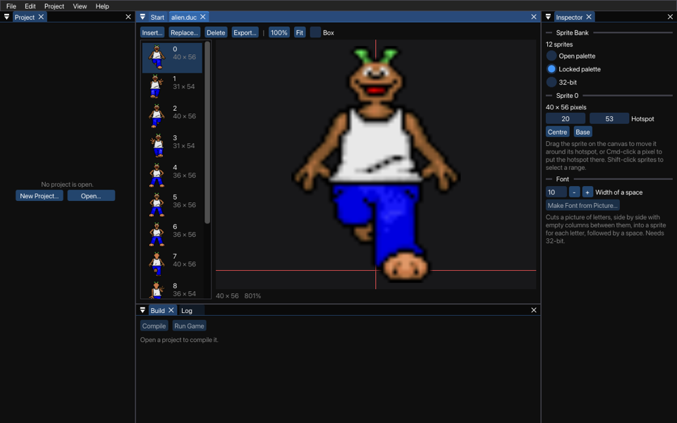

Use the sprite bank editor to create the character, object and mouse cursor animation frames used in your game. This is how it looks with Egor the Ego of the verb coin example:

The sprites of the bank are on the left. Click one to see it in the picture, at its hotspot, where the two lines cross. Shift-click another to select every sprite between them, or Ctrl-click (Command-click on macOS) sprites to select them, or take them out of the selection, one at a time. Use the arrow keys, Home and End to go through them. Drag sprites up or down the list to change their order; dragging a selected sprite moves all the selected ones.
Open a sprite bank (a .duc file) with File > Open, or make a new one with File > New > Sprite Bank.
Insert... adds PNG or TGA images as sprites after the selected ones; you can choose several images at once. You can also drop images on the sprite bank. Replace... replaces the picture of the selected sprite with another image, and keeps its hotspot. A new sprite gets its hotspot halfway across its bottom row.
Import Sheet... cuts one image, such as the sprite sheet of an animation from a drawing program, into a grid of frames of the same size, and inserts them after the selected sprites, a row at a time from the top left. Choose the number of Columns and Rows, and with Frames how many cells to use, for a sheet whose last row isn't full. Skip empty cells leaves out the cells that are all transparent, and Trim empty space cuts each frame down to its pixels that show. Every frame gets its hotspot halfway across the bottom row of its cell, also when it's trimmed, so the frames of the animation stay lined up.
The palette stuff is a relic from when SLUDGE didn't support 32-bit colour. New sprite banks are 32-bit, and PNG images and fonts need it.
The mode of a bank is in the Inspector. If Open palette is selected, any new colours used by the image you're adding which aren't already in the palette are added automatically. If Locked palette is selected and the image uses colours which don't appear in the sprite bank's palette, the closest colours which do exist in the palette will be used. Each sprite bank can use only one palette, and the maximum number of colours is 255. A bank with a palette opens with the palette locked. Choosing 32-bit colour converts a bank with a palette, which can't be undone.
The hotspot for a sprite is the point around which all scaling is to be done, and also the point which will be positioned at any given (x, y) when the sprite is displayed. For a mouse pointer, the hotspot should be positioned at the tip of the arrow or the centre of the crosshair (and so on). For a character, it is suggested that the hotspot is the point at ground level directly beneath the character's body, between the feet.
You can enter the co-ordinates of the hotspot in the Inspector, making it easy to be pixel-perfect, but there are also the buttons Centre to set the hotspot to the centre of the image (useful for inventory icons) and Base to set the hotspot to halfway across the bottom row of pixels (approximately the correct hotspot for characters, although you may need to then tinker with the values manually). They work on all the selected sprites, and with several selected, Use the Hotspot of ... for All gives them all the hotspot of the last one.
You can also drag the sprite in the picture to move it around its hotspot, or Ctrl-click a pixel (Command-click on macOS) to put the hotspot there. Show sprite size draws a box around the sprite. Every change can be undone with Edit > Undo.
To save a sprite as a PNG file, select it and choose Export....
To delete sprites from a sprite bank, select them and choose Delete, or press Delete.
Save the sprite bank with File > Save, or under another name with File > Save As.
When loading sprites from TGA image files into a bank with a palette, the colour magenta (#FF00FF or 255, 0, 255) is used as transparent; the same colour as is treated as transparent by the addOverlay and mixOverlay functions. If you're loading from PNG files, the alpha layer is used.
Make Font from Picture..., under Fontify in the Inspector, makes it easier to get fonts into SLUDGE, but it can also be used if you prefer to create your sprites on a single image before converting them into a sprite bank. It searches an image for segments that are horizontally separated by transparency and creates a sprite out of each segment, after the selected sprites. An additional space character is created after them, as wide as Width of a space. As an example, let's take this image (the checkerboard pattern indicates transparency):

It turns it into these four sprites:

The green background is shown because Show sprite size is checked.
SLUDGE and this SLUDGE documentation are copyright Hungry Software and contributors 2000-2012